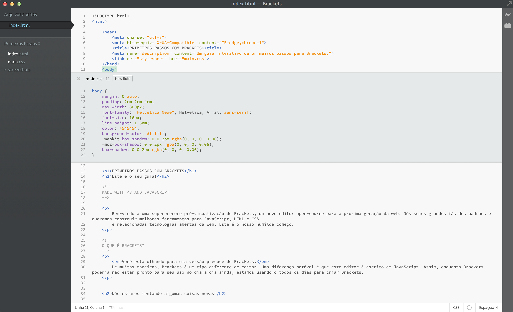

Bem-vindo ao Brackets, um moderno editor de código open-source que entende de web design. Leve, mas poderoso, ele combina ferramentas visuais no editor para que você obtenha a quantidade certa de ajuda quando precisar.
O Brackets é um editor diferente. O Brackets tem algumas características únicas, como a Edição Rápida (Quick Edit), Visualização ao vivo (Live Preview) e muitas outras que você não encontrará em outros editores. E o Brackets é escrito em JavaScript, HTML e CSS. Isso significa que a maioria de vocês que utilizam o Brackets possuem as habilidades necessárias para modificar e estender o editor. Na verdade, usamos o Brackets todos os dias para desenvolver o Brackets. Para saber mais sobre como utilizar os principais recursos, continue lendo.
Para editar seu próprio código utilizando o Brackets, basta abrir a pasta contendo seus arquivos. O Brackets trata a pasta atualmente aberta como um "Projeto", recursos como Code Hints, Live Preview e Quick Edit usam apenas os arquivos da pasta atualmente aberta.
Assim que você estiver pronto para sair desse projeto exemplo e editar seu próprio código, você pode usar o menu na barra lateral para trocar de pasta. Nesse momento, o menu diz "Primeiros Passos" - que é a pasta que possui o arquivo que você está olhando agora mesmo. Clique no menu e escolha "Abrir pasta..." para abrir sua própria pasta. Também é possível utilizar o menu para voltar a pastas que você abriu anteriormente, incluindo esse projeto de exemplo.Sem mais necessidade de ficar trocando entre seus arquivos e perder o contexto. Quando estiver editando HTML, use o atalho Cmd/Ctrl + E para abrir um rápido editor em linha (quick inline editor) que mostra todo o CSS relacionado. Faça uma modificação no seu CSS, aperte ESC e você está de volta a edição do HTML, ou apenas deixe as regras CSS abertas e elas se tornarão parte do seu editor HTML. Se você apertar ESC fora do quick inline editor, todos eles irão se recolher. Quick Edit também encontrará regras definidas em arquivos LESS e SCSS, incluindo regras aninhadas.
Quer vê-lo em ação? Coloque o cursor sobre a tag acima e pressione Cmd/Ctrl + E. Você deverá ver um editor rápido de CSS aparecer acima, mostrando as regras CSS que estão aplicadas a ele. Quick Edit funciona em classes e atributos id também. Você pode usá-lo com seus arquivos LESS e SCSS também. Você pode criar novas regras da mesma maneira. Clique em uma das tags acima e aperte Cmd/Ctrl + E. Não existem regras para ele nesse momento, mas você pode clicar no botão Nova Regra e adicionar uma nova regra para . Você também pode usar o mesmo atalho para editar outras coisas - como funções em JavaScript, cores e funções de tempo de animação - e nós estamos adicionando mais e mais o tempo todo.
Por enquanto inline editors não podem ser aninhados, então você só pode usar Quick Edit enquanto o cursor estiver em um editor de tamanho máximo.
Você sabe aquela "dança salvar/recarregar" que temos feito há anos? Aquela onde você faz mudanças no seu editor, clica em salvar, alterna para o navegador e então recarrega a página para finalmente ver o resultado? Com o Brackets, você não precisa fazer essa dança.
O Brackets vai abrir uma conexão ao vivo com o seu navegador local e vai enviar as atualizações no CSS enquanto você digita! Você já deve estar fazendo alguma coisa como esta hoje com ferramentas baseadas em navegador, mas com o Brackets não há necessidade de copiar e colar o CSS final de volta para o editor. Seu código é executado no navegador, mas vive em seu editor!
O Brackets facilita ver como as mudanças no seu HTML e CSS irão afetar a página. Quando seu cursor está em uma regra CSS, o Brackets irá destacar todos os elementos afetados no navegador. Similarmente, quando estiver editando um arquivo HTML, o Brackets irá destacar o elemento HTML correspondente no navegador.
Se você tem o Google Chrome instalado, você pode tentar fazer isso sozinho. Clique no ícone em forma de raio no canto superior direito ou pressione Cmd/Ctrl + Alt + P. Quando a Visualização ao Vivo (Live Preview) é habilitada em um documento HTML, todos os documentos CSS vinculados podem ser editados em tempo real. O ícone vai mudar de cinza para ouro quando o Brackets estabelecer uma conexão com o seu navegador. Agora, coloque o cursor sobre a tag acima e use Cmd/Ctrl + E para abrir as regras CSS definidas. Tente mudar o tamanho da borda de 10px para 20px ou alterar a cor de fundo de "transparent" para "hotpink". Se você tem o Brackets e seu navegador rodando lado a lado, você vai ver as alterações refletidas instantaneamente no seu navegador. Legal, certo?Atualmente, o Brackets suporta Visualização ao Vivo (Live Preview) apenas para HTML e CSS. Entretanto, na versão atual, mudanças nos arquivos JavaScript são automaticamente carregadas quando você salva. Estamos trabalhando no suporte à Visualização ao Vivo para JavaScript. Visualizações ao vivo atualmente só são possíveis com Google Chrome, mas nós esperamos trazer essa funcionalidade para os principais navegadores no futuro.
Para aqueles de nós que ainda não memorizaram os códigos de cores equivalentes para HEX e RGB, o Brackets facilita ver exatamente qual cor está sendo utilizada. Tanto no CSS quanto no HTML, basta passar o mouse por cima de qualquer valor de cor ou gradiente que o Brackets irá mostrar uma pré-visualização da cor/gradiente. O mesmo vale para imagens: passe o mouse por cima do link da imagem no Brackets e ele irá mostrar uma pré-visualização dessa imagem.
Tente o Quick View você mesmo, passe o cursor na tag no topo desse documento e aperte Cmd/Ctrl + E para abrir o editor rápido de CSS. Agora simplesmente passe o mouse por cima de qualquer um dos valores de cor no CSS. Você também pode ver isso em ação em gradientes abrindo um editor rápido de CSS na tag e passando o mouse por qualquer um dos dos valores de background-image. Tente também a pré-visualização de imagens, coloque o mouse sobre o link de screenshot incluído anteriormente nesse documento.Além de todas as coisas boas construídas no Brackets, nossa grande comunidade de desenvolvedores de extensões tem construído centenas de extensões que adicionam funcionalidades uteis ao editor. Se tem algo que você precisa que o Brackets não oferece, mais do que provavelmente alguém já construiu uma extensão para isso. Para pesquisar na lista de extensões disponíveis, escolha Arquivo > Gerenciador de Extensões... e clique na aba "Disponíveis". Quando encontrar uma extensão que você quer, apenas clique no botão "Instalar" ao lado.
O Brackets é um projeto open-source. Desenvolvedores web de todo o mundo estão a contribuir para criar um editor de código melhor. Muitos outros estão desenvolvendo extensões que espandem as capacidades do Brackets. Diga-nos o que você pensa, compartilhe as suas ideias ou contribua diretamente para o projeto.